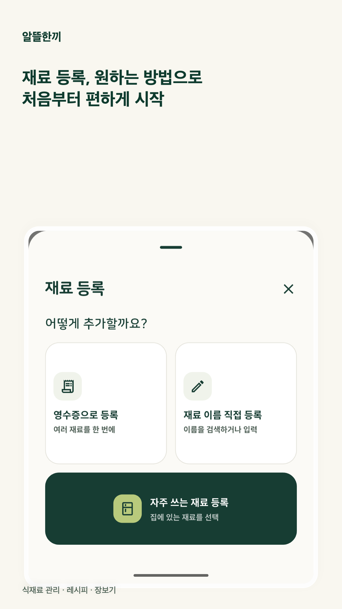
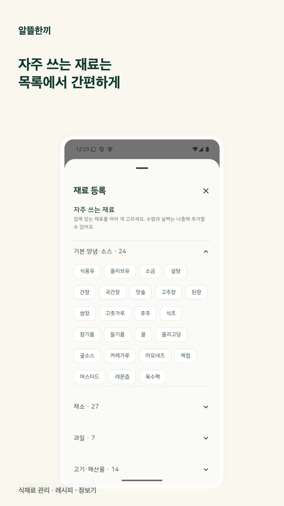

알뜰한끼 사용 가이드 · 뉴럴에이전트
냉장고 재료 등록, 처음부터 다 적지 않아도 됩니다
식재료 관리 앱을 깔고도 입력이 번거로워 멈췄다면, 냉장고를 전부 정리할 필요 없이 눈에 보이는 재료부터 시작해보세요.

1. 오늘 쓸 재료 몇 개만 먼저 등록하세요
처음부터 냉장고를 비우고 하나씩 입력하면 부담이 큽니다. 문을 열었을 때 눈에 보이는 우유, 달걀, 두부처럼 자주 쓰는 재료부터 시작하세요. 목록을 완벽하게 만드는 것보다 오늘 무엇이 있는지 확인하는 습관을 만드는 게 먼저입니다.

2. 이름을 직접 쓰지 말고 목록에서 골라보세요
식용유, 소금, 간장처럼 자주 쓰는 재료는 분류된 목록에서 골라 등록하면 이름을 매번 입력하지 않아도 됩니다. 수량을 정확히 모르면 ‘있음’이나 ‘조금 남음’처럼 보유 상태부터 기록하고, 필요할 때 양과 날짜를 보완해도 됩니다.
3. 장 본 직후에는 영수증 품목을 확인하세요
여러 재료를 한 번에 추가하고 싶다면 영수증 사진을 활용할 수 있습니다. 읽힌 품목은 저장 전에 확인하고, 틀린 이름은 고쳐주세요. 영수증의 구매일이 소비기한은 아니므로, 보관 날짜를 기록할 때는 식품 포장에 적힌 날짜를 따로 확인해야 합니다.
처음부터 냉장고 전체를 등록하기보다, 자주 쓰는 재료와 새로 산 재료만 먼저 추가해보세요.
내 재료로 메뉴와 장보기까지
등록한 재료를 기준으로 만들 수 있는 요리를 찾아보고, 부족한 것은 장보기 목록에 담아둘 수 있습니다. 재료 상태와 실제 양은 직접 확인해 사용하세요.